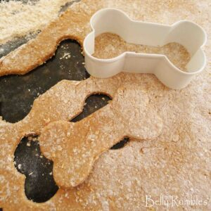

Dog Treats

Chicken liver cookies
Ingredients
- 200 grams chicken livers
- 80 ml (one third cup) milk
- 1 eggs
- 100 grams semolina
- 100 grams wholemeal plain flour
Steps
- Preheat oven to 150 degrees C.
- Clean and cut up livers. Without oil, stir-fry livers until they are dry. Transfer to a blender or food processor and blend well. Add milk and egg then blend well again.
- Place flour and semolina in a bowl. Add the liver “milk shake” mixture to the dry ingredients. Mix until a dough is formed.
- Place dough on a well floured surface and knead lightly until it is no longer sticky. Roll out to a thickness of 5mm. Cut out your choice of shapes from the dough. I used a bone shaped cutter.
- Left over dough can be kneaded back together and re-rolled to cut more shapes out of.
- Place cookies on a lined baking tray and bake for approximately 30 minutes until cooked through. Remove from heat and leave to cool on a wire rack.
- Cookies may be stored in an airtight container at room temperature for up to 10 days. They may also be stored in the fridge or freezer up to 12 months.